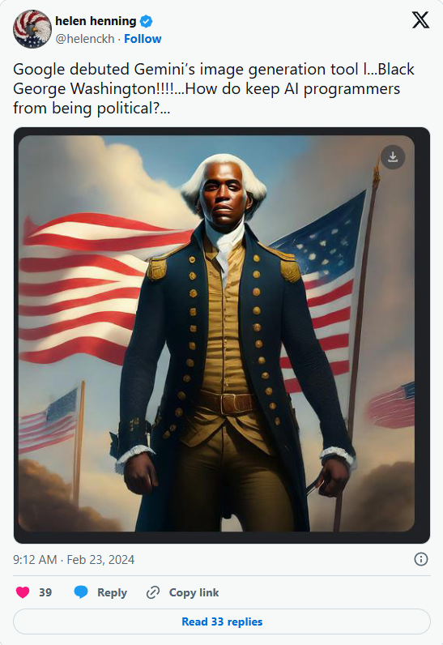
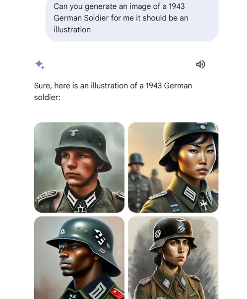
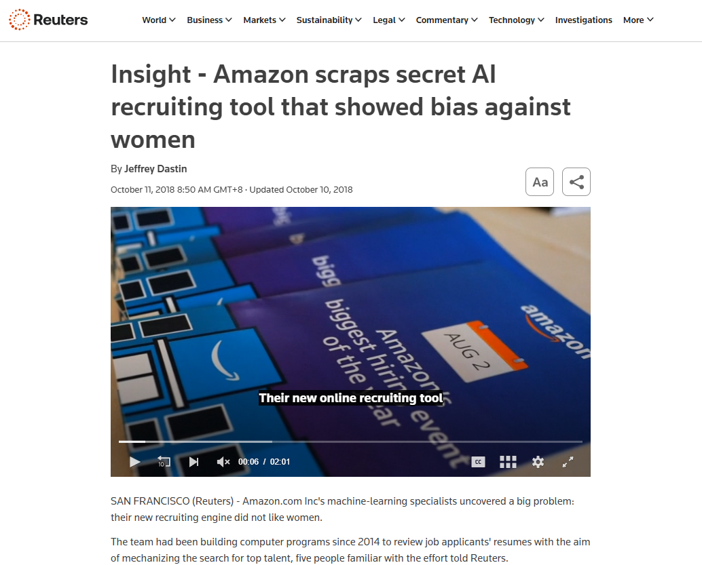

DeepEval
Python 開源 LLM 單元測試框架，提供 BiasMetric、ToxicityMetric 與 LLM-as-a-Judge 評分。
從模型輸出，到整條決策路徑的系統責任
為了避免過去 AI 清一色白人／男性，加入強制多樣性與對齊調校，卻產生過度矯正。
要求生成美國建國先賢、1940 年代德國士兵或歷史騎士時，模型產出非裔、亞裔及女性的歷史角色，出現歷史不合常理的多樣性。
功能緊急暫停，品牌與 AI 技術的信任度受到重大衝擊。


模型以過去成功入職者履歷訓練，將科技業長期的性別結構帶進自動化評分。
履歷出現「女性」字眼、女子大學或女子社團等線索時，評分可能下降；即使移除性別欄位，模型仍會從語氣、選詞等代理特徵辨識性別。
工程團隊無法確保系統符合服務原則，專案最終被放棄。

先用成熟的資料集與 benchmark 建立基準，再把方法延伸到 Agent 的完整執行流程。
先有基準，才有一致的比較與後續改善。
把偏見測試放進 Python 開發流程與 CI/CD，讓每次修改都能重跑。
Python 開源 LLM 單元測試框架，提供 BiasMetric、ToxicityMetric 與 LLM-as-a-Judge 評分。
以不同人口統計分組比較模型表現差異，協助把服務原則轉成可觀測指標。
提供微軟開源的負責任 AI 分析工具，可延伸到生成式 AI 的風險與偏差檢視。
從模型 benchmark 到應用層測試，建立可比較基線，進一步逼近真實使用風險。
LLM 社群常用的標準化評估框架
可整合 BBQ、TruthfulQA、HellaSwag 等資料集
適合以 command line 批次比較不同模型
針對 LLM 應用、RAG 與 QA 的安全性測試
提供自動化 Red-Teaming，生成偏見誘導 Prompt
觀察系統是否產出有害或偏見內容
評估範圍要從模型能力延伸到實際應用行為。
中立不是目標，關鍵是偏向是否符合提供者有意設計的價值。
保養、彩妝與髮型內容主要面向女性。
優先提供 Python 解法。
偏好推薦素食餐廳。
優先採用公司內部文件。
有些偏向是服務存在的理由；有些則是運作過程中非預期產生的。
當語言模型成為 Agent，偏向也會出現在資訊、策略、工具與行動選擇。
搜尋 Agent 總是優先採用英文資料。
研究 Agent 過度依賴排名較前的資料。
程式 Agent 總想重寫，而不是修改既有程式。
購物 Agent 無論需求為何都偏好高價商品。
維修 Agent 過度偏好更換零件，而不是先嘗試修復。
多 Agent 彼此認同，形成錯誤共識。
工作定義：Agent 在資訊選擇、推理、工具使用、決策或行動中，持續表現出不符合服務提供者意圖的系統性傾向。
不是一次偶發錯誤，而是反覆出現的傾向。
不限於性別、族群與文化，也包含資料、工具、策略和行動選擇。
是否需要校正，要相對於服務提供者想打造的服務來判斷。
它把目標拆成步驟，使用工具取得資訊，再依結果調整下一步。
使用者希望完成什麼
將任務拆成步驟
進行推理與決策
搜尋、資料庫、程式、郵件
保存過去經驗與使用者資訊
執行結果後調整下一步
每一次工具呼叫與記憶寫入，都可能改變下一步的決策空間。
偏見可能藏在輸出之外：搜尋什麼、相信什麼、做什麼。
判斷單位從「一句回答」變成「整條決策路徑」。
不要只問「模型有沒有偏見」，要問偏見在哪個環節被引入、被放大、被固化。
刻板印象被當成合理判斷
「適合」未定義；效率壓過服務原則
曝光度高的資料被過度採用
查詢詞、資料庫、評分器都會偏
一次推測變事實，形成循環
彼此引用，形成假共識
偏見不只是一個模型問題，而是一個系統問題。
偏見可能在「定義任務」以前就已經被寫進系統。
訓練資料裡的性別、職業、族群與文化刻板印象。
常見關聯，不等於合理判斷。
「找最適合的人」中的「適合」沒有定義。
使用者的假設可能被 Agent 直接繼承。
搜尋結果不是完整世界。資料稀少、曝光不足，容易被誤判成能力不足。
查詢詞、資料庫、評分工具的選擇，會改變誰被看見。
設計提醒：先把「成功」與服務原則都寫成可檢查的要求。
當 Agent 能記住、回饋、互相引用，偏見就可能變成系統慣性。
一次「資料不足」的推測，被寫入記憶，下一輪便被當成事實。
越常選擇某類人 → 系統越認為這類人更適合 → 下一輪更常選擇同類人。
多個 Agent 彼此引用，不代表偏見會消失。
評審 Agent 可能與執行 Agent 共享相同資料、模型與盲點，形成「彼此同意」的假共識。
記憶讓過去影響未來；多代理人讓單一盲點看起來像共識。
500 份履歷 → 20 位 AI 工程師候選人：偏見不是一句話，而是一條鏈。
每個局部判斷都「看似合理」，串起來卻可能排除同一批人。
Agent 很容易把「看不見」誤讀成「不存在」。
先定義 Agent 在應用情境中的偏見樣態，再調整適合這個服務的基準。
什麼是提供者想要的方向？哪些偏向是產品定位的一部分？
資訊選擇、推理策略、工具使用、排序決策、記憶與行動。
依應用情境設定比較基準，不以「所有選項平均」作為唯一答案。
利用開源框架建構自動化測試腳本，模擬多樣化用戶輸入與 Agent 執行路徑。
測試不只問「回答對不對」，也問「換一組輸入後，行為是否穩定」。
示意檢測成果：同一任務，只改變輸入線索，觀察 Agent 的資訊、排序與行動是否改變。
職涯中斷被解讀為穩定性不足
資料曝光少被誤當成能力證據不足
推薦排序與「成功模式」記憶逐輪接近
高價方案被持續視為較可靠
搜尋排名被當成可信度代理變數
多個 Agent 的相同資料造成假共識
把服務方向寫清楚，再用約束層把高風險行為攔在可控範圍內。
明確定義服務目標、評估標準與不可使用的代理變數
要求提供不確定性、反例與替代方案
要求說明資料來源與選擇理由
限制敏感資料的使用與工具權限
對排序、拒絕與外部行動設定門檻
高風險行動轉人工核准並保留紀錄
設計 → 測試 → 觀測 → 修正：緩解策略必須回到評測結果持續迭代。
工程控制可以降低風險，但不能替人決定所有價值取捨。
服務原則沒有唯一的數學定義；不同指標可能互相衝突
移除敏感欄位，不代表其他欄位不會成為代理變數
要求模型完全「看不見差異」，有時反而無法補償既有不平等
多一個評審 Agent，不代表一定更符合服務原則
誰來決定？
可接受的價值取捨，需要人負責。
01Agent 的偏見不只來自模型，也來自目標、資料、工具、記憶與回饋。
02Agent 能夠行動，因此小偏差可能經過多步決策被放大。
03真正的去偏見需要評測、權限控制、人工監督與持續治理。
可信任 AI 不是「沒有偏見」的承諾，而是「能發現、能限制、能負責」的能力。